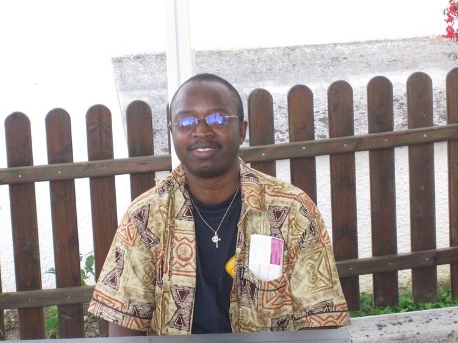
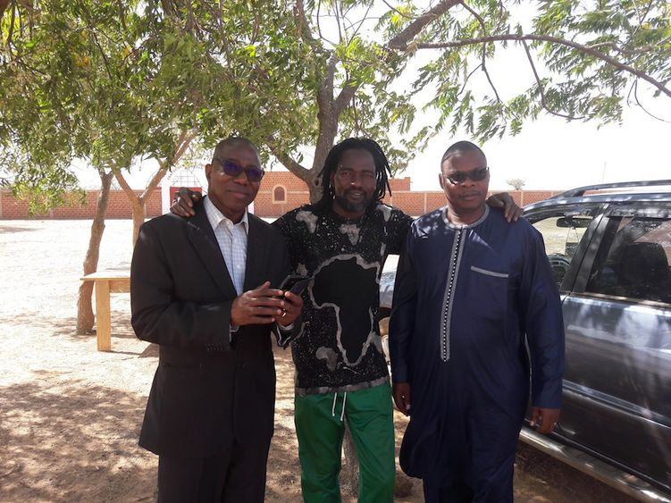
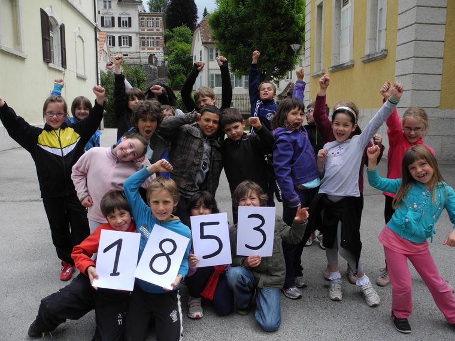
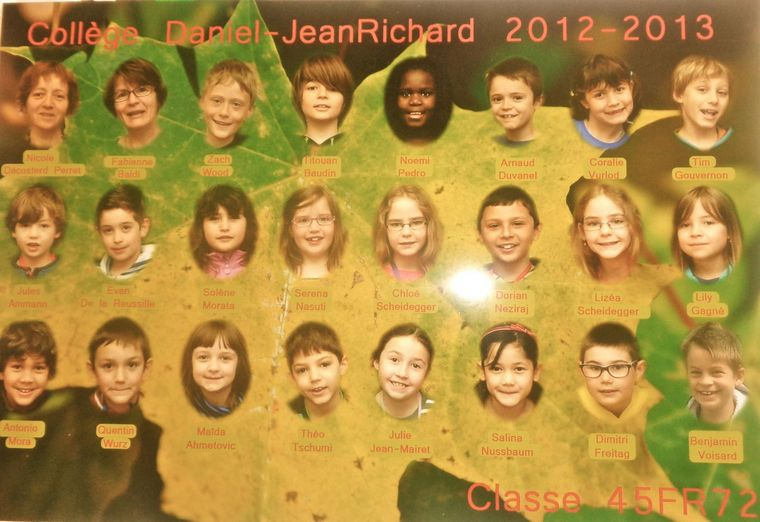

Les partenaires de Buùd-Yam
Buùd-Yam est partenaire à d'autres associations qui oeuvrent aussi pour l'amélioration des conditions de vie humaine. Des élèves, étudiants et professionnels de la santé collaborent avec Buùd-Yam pour la bonne marche de ses activités, ce qui fait d'eux des partenaires de l'association.
CADAAY est le Centre d'Apprentissage et de Développement en Art et Artisanat de Yako. L'association oeuvre dans la promotion des talents artistiques. En savoir plus
KASABATI est une association composée de personnes vivant avec le VIH, menant depuis de nombreuses années des activités de lutte contre le SIDA au sein du milieu associatif. En savoir plus
Yelemani signifiant "changement" est une association de droit burkinabè à but non lucratif pour la promotion de la souveraineté alimentaire. En savoir plus
PROTAF (Programme TIC au Faso) est un programme qui oeuvre pour rapprocher l’informatique des populations dans les coins et recoins du Burkina. En savoir plus
Des professionnels de la santé


Des collégiens du Collège Daniel Jean Richard

